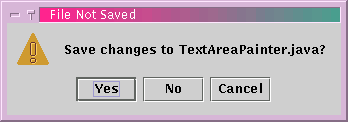
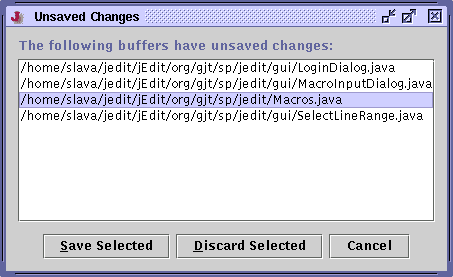

File>Close File (keyboard equivalent: Control-W) will close the current buffer. If it has unsaved changes, jEdit will ask if they should be saved first. The No option discards the unsaved changes with no further ado. If you decide you didn't want to close the buffer after all, Cancel cancels the close operation and returns to the editor.
Figure 3-8. The message displayed if a file has unsaved changes

File>Close All Buffers (keyboard equivalent: F4) will close all currently open buffers. If any buffers have unsaved changes, a dialog box will be displayed, listing them all. To discard changes to a buffer, select it from the list and click Discard Selected. To save changes, click Save Selected. Multiple buffers to operate on can be selected by clicking on them while holding down Control.
Figure 3-9. The dialog box displayed by Close All Buffers if there are unsaved changes

File>Exit (keyboard equivalent: Control-E Control-Q) will completely exit jEdit, asking if any unsaved buffers should be saved first.